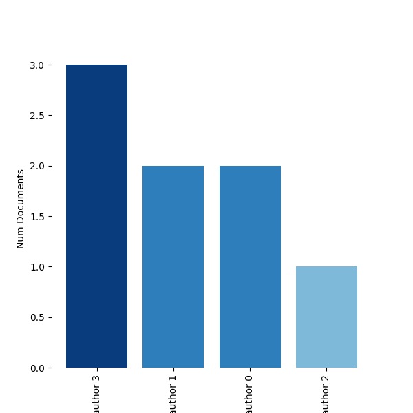

Plots¶
-
techminer.plots.bar(x, width=0.8, bottom=None, align='center', cmap='Greys', figsize=10, 5, **kwargs)[source]¶ Creates a bar plot from a dataframe.
Examples
>>> import pandas as pd >>> df = pd.DataFrame( ... { ... "Authors": "author 3,author 1,author 0,author 2".split(","), ... "Num Documents": [3, 2, 2, 1], ... "ID": list(range(4)), ... } ... ) >>> df Authors Num Documents ID 0 author 3 3 0 1 author 1 2 1 2 author 0 2 2 3 author 2 1 3 >>> fig = bar(df, cmap=plt.cm.Blues) >>> fig.savefig('sphinx/images/barplot.png')
{kind=link}
-
techminer.plots.worldmap(x, figsize=10, 5, cmap='Pastel2', legend=True, *args, **kwargs)[source]¶ Worldmap plot with the number of documents per country.
Examples
>>> import pandas as pd >>> x = pd.DataFrame( ... { ... "AU_CO": ["China", "Taiwan", "United States", "United Kingdom", "India", "Colombia"], ... "Num Documents": [1000, 900, 800, 700, 600, 1000], ... }, ... ) >>> x AU_CO Num Documents 0 China 1000 1 Taiwan 900 2 United States 800 3 United Kingdom 700 4 India 600 5 Colombia 1000
>>> fig = worldmap(x, figsize=(15, 6)) >>> fig.savefig('sphinx/images/worldmap.png')